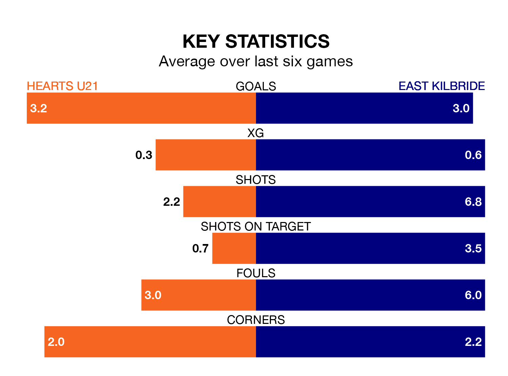

Two of the Lowland Football League's top sides face each other at the Ainslie Park Stadium in Friday's late kick-off, when third-placed Hearts U21 host table-topping East Kilbride.
Hearts U21 have picked up 14 wins and six draws from 26 games so far this season, and sit 18 points below the visitors going into the 7.45pm match.
The Kilby, meanwhile, have won 21 and drawn three, picking up 66 points.
With 79 goals in 26 games so far this season, East Kilbride are the league's highest scorers with 3.0 goals per game. And they are conceding fewer than average, letting in 30 goals at a rate of 1.2 per game.
Hearts U21 are also above average scorers, with 2.7 goals per game, compared to a league average of 1.7. They have conceded 1.2 goals per game.
Hearts are in mixed form in the Lowland Football League, with three wins and three losses from their last six games.
With five wins and a draw over that period, the Kilby's form is much better – they have taken 16 points from 18, compared to the hosts' nine.
In the last three years, Hearts U21 and East Kilbride have played each other on three occasions. Hearts U21 won two of them and East Kilbride one.
Their last meeting was on November 25, when Hearts U21 won 4-2 away.
Hearts U21's last match was on Saturday, a 1-0 win against Tranent Juniors.
East Kilbride beat Edinburgh University 7-0 last time out, also on Saturday.
Updated: 10:08 (UTC), 23/02/24